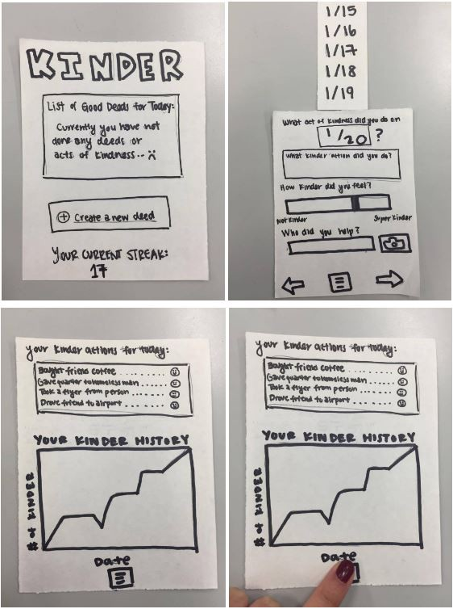
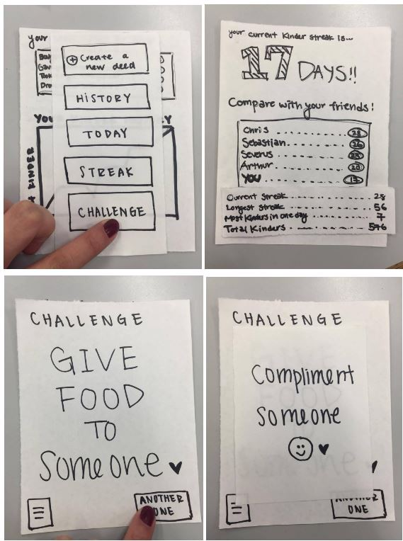
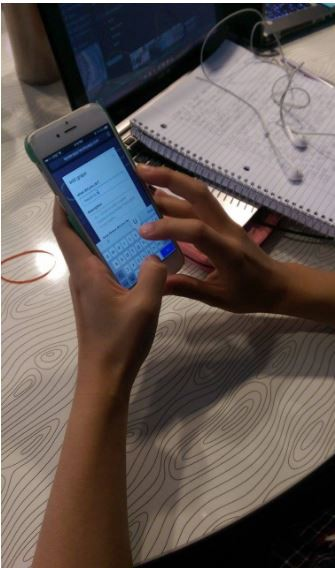

A mobile web app that incentivizes and allows users to record and analyze their altruistic behavior.
People want to do good deeds, but life gets in the way. We often become so absorbed in our own activities and work that we forget to acknowledge others or even ourselves. By doing good deeds regularly and keeping track of them, we can make time and strive to create a positive environment around us and to make ourselves happy.
Our goal is to incentivize individuals who want to do good deeds even when they are busy by creating a web app that allows them to keep track and analyze their daily habits.
In a team of three, I was responsible for designing and developing.
Things that I did:
After brainstorming, our team came up with a list of must-have features based on user needs.
We created two different paper prototypes, and below was the one that I created.
 User testing and heuristics evaluation are the most effective ways to highlight usability issues in our prototypes. We used Nielsen’s ten heuristics as a guideline and made a usability script.
From user testings, these were some examples of the heuristics violations that we found.
After many iterations of designs and user-testing, we were finally ready to develop our web app. We decided to implement the application using HTML, CSS, Javascript, and node.js. Having little experience with web development, each of us spent hours learning from online tutorials and reading about Node.js. The biggest challenge was understanding ajax and knowing the difference between client and server side. After coding and debugging for two weeks straight, we were finally able to complete most of the basic functionalities to demonstrate the general flow of our web app.
10-weeks was definitely not enough time for us to completely finish the app unfortunately. There were still so many changes we wanted to make, such as making the app responsive and implementing a real back-end. While there are still many functionalities missing, users should still be able to understand the purpose and flow of our app. I definitely learned a lot about design process and web technologies from this experience.